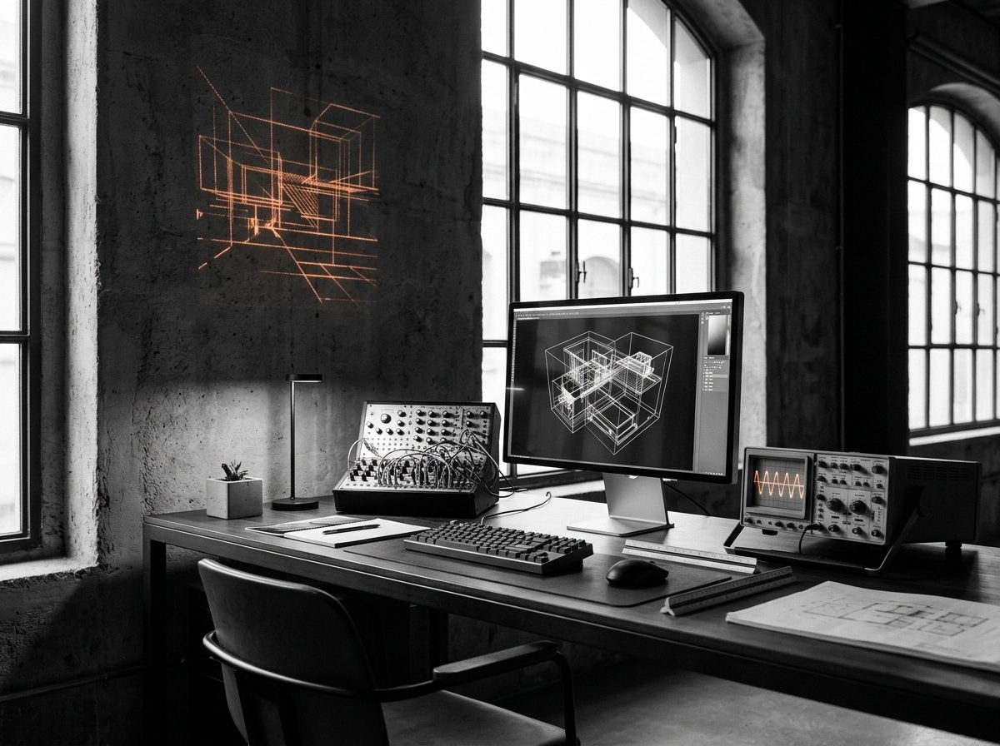

Investigación en artes visuales y sistemas generativos: un espacio de experimentación con tecnologías emergentes y herramientas algorítmicas para nuevas inteligencias visuales.

AISUNI articula claridad, estructura y expresión matemática, entendiendo la forma no como simple apariencia superficial sino como un instrumento riguroso de pensamiento visual.
Enfoque & Filosofía
Diseñamos sistemas visuales que comunican antes de ser decodificados, donde la precisión analítica del diseño editorial suizo y la sensibilidad orgánica de la naturaleza coexisten sin fricción. Nuestro trasfondo en diseño industrial, visualización de datos y programación creativa aporta a cada proyecto un equilibrio entre intención conceptual y economía geométrica.
Metodología Algorítmica
Cada investigación parte de la formulación de reglas matemáticas, ecuaciones diferenciales o gramáticas de formas en Python, GLSL y C++. En lugar de dibujar un único resultado estático, construimos instrumentos generativos capaces de producir familias enteras de gráficas, tipografías cinéticas, grabados para plotter e interfaces sonoras.
Ejes de Experimentación
Clientes & Colaboraciones Seleccionadas
- UNICEF Office of InnovationGlobal / Ginebra
- UNICEF Digital Impact DivisionNY / Estocolmo
- MIT Media LabCambridge, MA
- ITU (Unión Internacional de Telecomunicaciones)Ginebra, CH
- Sofiane Pamart · Sound VisualsParís, FR
- HP Inc. · Design SystemsPalo Alto / BCN
- Harbour.Space UniversityBarcelona, ES
- Triggers & MendesaltarenBarcelona / Madrid
- Scribe ColombiaBogotá, CO
Charlas, Exposiciones & Publicaciones
- 2026 Mozilla Fest — Ponencia y demostración: Expanding the Map & Autonomous Systems Ámsterdam / BCN
- 2026 Sottotraccia Festival — Exposición audiovisual: Painting with Sound & Morfogénesis Italia · Instalación
- 2026 Flexible Visual Systems — Entrevista monográfica, taller y curso de sistemas modulares Publicación Editorial
- 2026 Pittogramma & Cargo #378 — Entrevista Shape & System Designer y Selección Oficial Archivo Destacado
- 2025 Vibe Fridays at UNICEF — Exhibición interactiva: Painting with Sound UNICEF Innovation
- 2025 Destilo 4th Edition — Exposición colectiva de arte generativo y sinestesia Barcelona, ES
- 2023 Arteria Exhibition — Muestra inaugural de geometría matemática: Give It a Shape Exposición Física
Actualizable mediante archivos Markdown (.md) sin tocar HTML
Este portafolio utiliza las colecciones nativas de Jekyll en GitHub Pages (_proyectos/ y _archivo/). Al subir un nuevo archivo .md y sus imágenes en assets/, Jekyll regenera automáticamente data.json y la interfaz renderiza la obra, su galería múltiple y sus pestañas de Concepto y Proceso.
--- id: "nueva-obra-generativa" num: "09" title: "Título de la Obra" category: "Algoritmos" categoryTag: "Algoritmos & Simulación" year: "2026" client: "Cliente o Ámbito" image: "assets/foto-portada.jpg" gallery: - "assets/foto-portada.jpg" - "assets/foto-detalle.jpg" tools: "Python, GLSL, Processing" status: "Investigación activa" --- ## Concepto Texto descriptivo del concepto... ## Proceso Metodología, fórmulas o algoritmos...
Para encargos editoriales, sistemas de identidad generativa, visualización científica de datos o invitaciones a conferencias en Barcelona e internacionalmente.